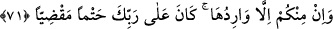

cihetinden Hak Teâlâ’ya “en çok karşı geleni ayıracağız.” çıkaracağız -ki bunu Beğavî
söylemiştir- yani her ümmetten en çok âsî olanları ayıracağız. Allah Teâlâ, her gruptan
en âsî olanları, isyan derecelerine göre ayırır. Toplandıkları zaman da onları sırayla
cehenneme atar.
Tefsir-i Kebîr’de şöyle der: “Önce onları toplar, sonra en azgınlarını en büyük azâba
tâbi tutar. Çünkü hem dalâlette olan hem de başkalarını dalâlete sevk eden kimsenin
azâbının, sadece başkasını dalâlete düşeninkinden daha fazla olması gerekir. Başkasını
şüpheye düşürenin azabı, bilmeden ona uyanınki gibi değildir. Nitekim Allah Teâlâ
şöyle buyurmuştur: “İnkâr edip de (insanları) Allah yolundan alıkoyanlar var ya, işte
onlara, yapmakta oldukları bozgunculuklar sebebiyle, azaplarını kat kat
artıracağız.” (en-Nahl, 16/88)
Fakir (Bursevî) der ki: Âyette daha önce söz konusu edilen Übeyy’e, büyük bir tehdid
vardır. O, daha önce belirtilen sözü dolayısıyla Allâh’a en fazla isyan eden kişi olduğu
için Arap müşriklerinden ayrılıp çıkarılacak ilk kişidir.
Bilesin ki, kıyâmet günü ilk yapılacak olan yeniden dirilme (ba‘s), sonra haşr, sonra
hazır etme (ihzar), sonra ‘ayırma’ sonra da cehenneme atmadır. Nitekim şu âyet de bunu
ifade etmektedir:
70. Sonra, elbette biz, kimlerin oraya gitmeye daha çok müstahak olduğunu daha
iyi biliriz.
“Sonra, elbette biz, kimlerin oraya” cehennem ateşine “gitmeye” girmeye “daha
çok müstahak” lâyık “olduğunu daha iyi biliriz.” Onlar, (önceki âyette) ayrılacağı
belirtilen kimselerdir.
71. İçinizden oraya gitmeyecek hiç kimse yoktur. Bu, Rabb’inin üzerine aldığı
kesin (elbette yerine getirilmesi gereken) borçtur.
Ey insanlar “içinizden oraya gitmeyecek hiç kimse yoktur.” Yâni cehenneme
ulaşacak ve girecektir. “Bu,” yani onların oraya girmesi “Rabb’inin üzerine aldığı
kesin (elbette yerine getirilmesi gereken) borçtur.” Allah onu kendisine vâcib
kılmıştır. Onun meydana gelmesi kesin olarak zorunludur.